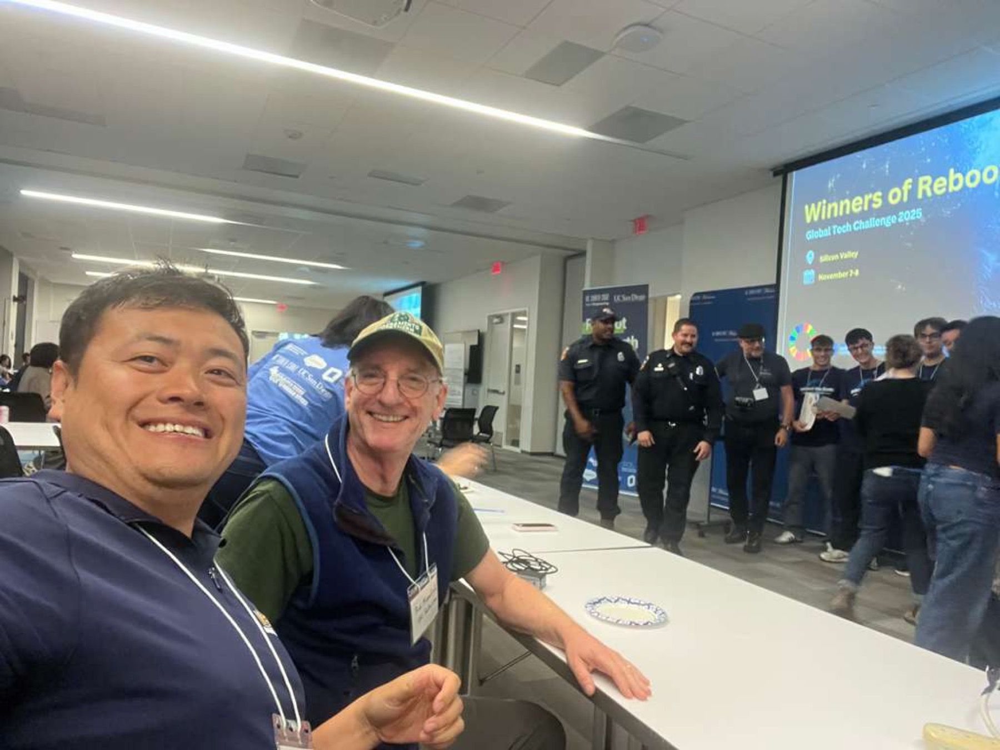
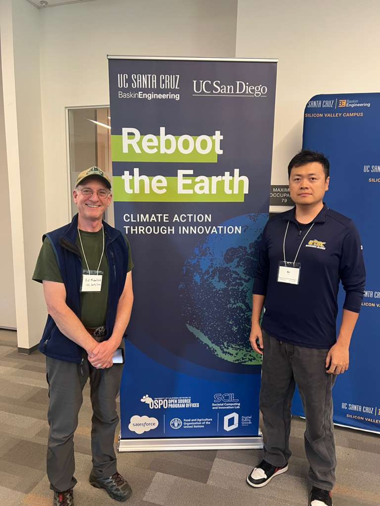

GeoFly Lab serves on judging panel for Reboot the Earth UN Innovation Competition
GeoFly Lab was honored to serve on the judging panel for the Reboot the Earth UN Innovation Competition hosted at the UCSC Silicon Valley Center. The event brought together student innovation teams from UC Santa Cruz, UC San Diego, and other UC campuses to propose actionable solutions for wildfire-related challenges.

The competition highlighted interdisciplinary ideas spanning hazard monitoring, decision support, community resilience, and operational tools for wildfire response. We are grateful for the opportunity to learn from the teams’ perspectives and to support a culture of applied, impact-driven innovation across the UC system.

Congratulations to the Fireform team for winning the championship. Fireform presented an AI-based form-filling system designed to support fire emergency workflows, with the goal of reducing reporting friction and improving operational speed during high-tempo response situations.

GeoFly Lab appreciates the opportunity to support student innovation and looks forward to continued collaborations that advance wildfire science, geospatial analysis, and technology transfer.